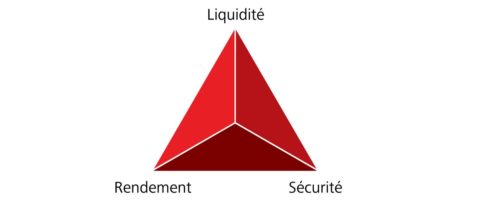

Le triangle magique s'applique à tous les objectifs de placement
Dans un monde idéal, un placement financier devrait permettre de réaliser des rendements élevés, offrir un maximum de sécurité et être constamment disponible. Dans la réalité, ces exigences entrent en conflit les unes avec les autres. En tant qu'investisseuse ou investisseur, vous devez définir vos priorités.
Dans ce contexte, nous parlons du triangle magique des placements financiers, dont voici les trois pointes :
- Rendement : opportunité de bénéficier à partir d'un placement financier.
- Sécurité : protection contre une perte de patrimoine.
- Liquidité : possibilité de disposer rapidement de son argent.
Sur ces trois éléments, il n'est possible d'en atteindre que deux à la fois. C'est ainsi que la sécurité, le désir de fiabilité élevée, implique des éventuelles opportunités de rendement ou que l'envie d'accéder rapidement à son argent (donc une liquidité) rend les placements à long terme impossibles. Si vous êtes conscient de ces interactions, vous réduirez les déceptions.
Comment investir ?